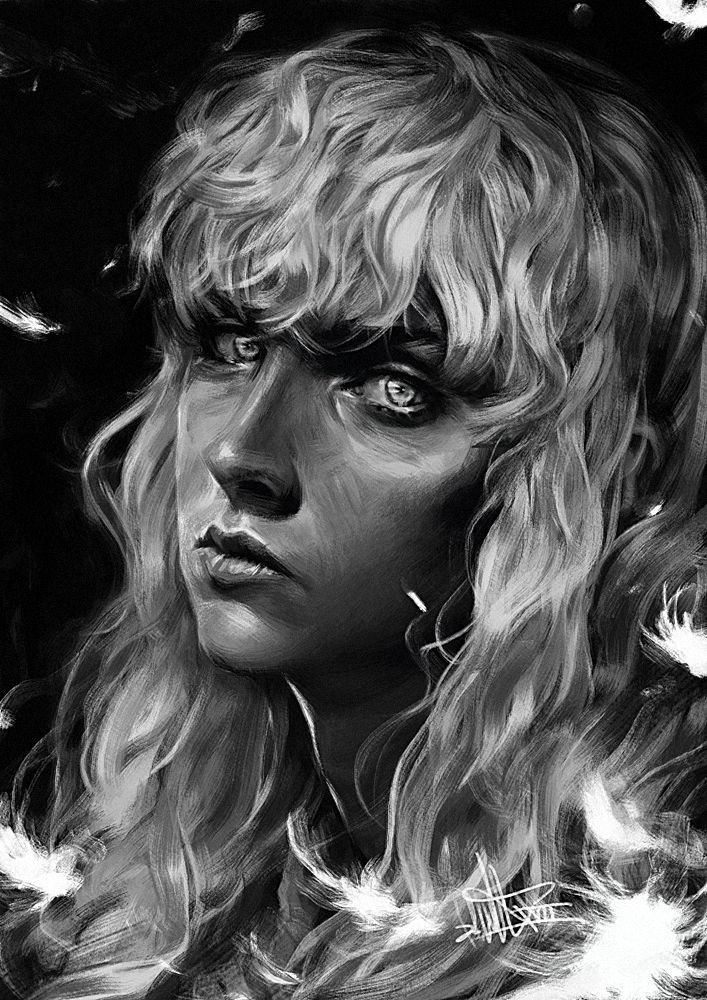
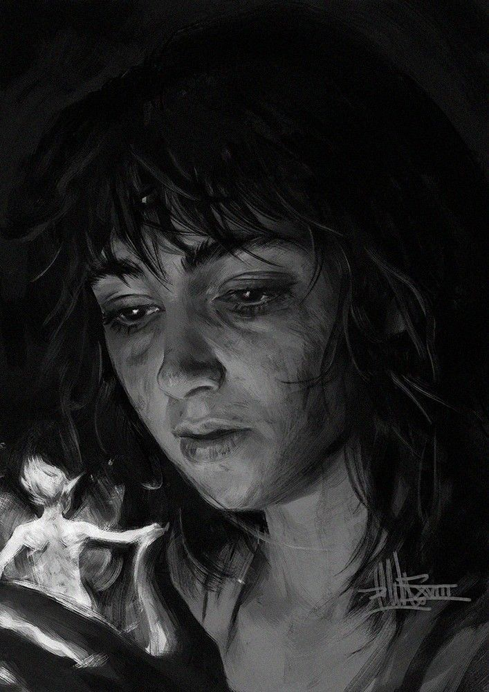
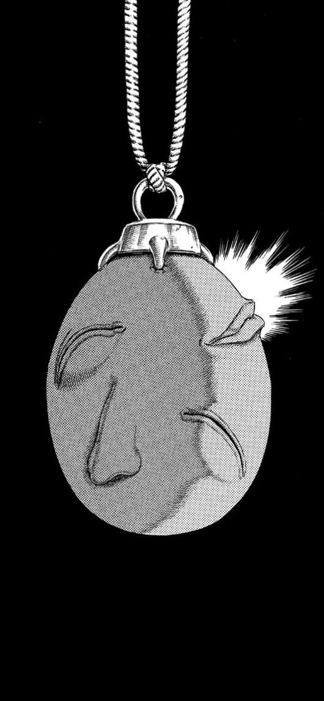
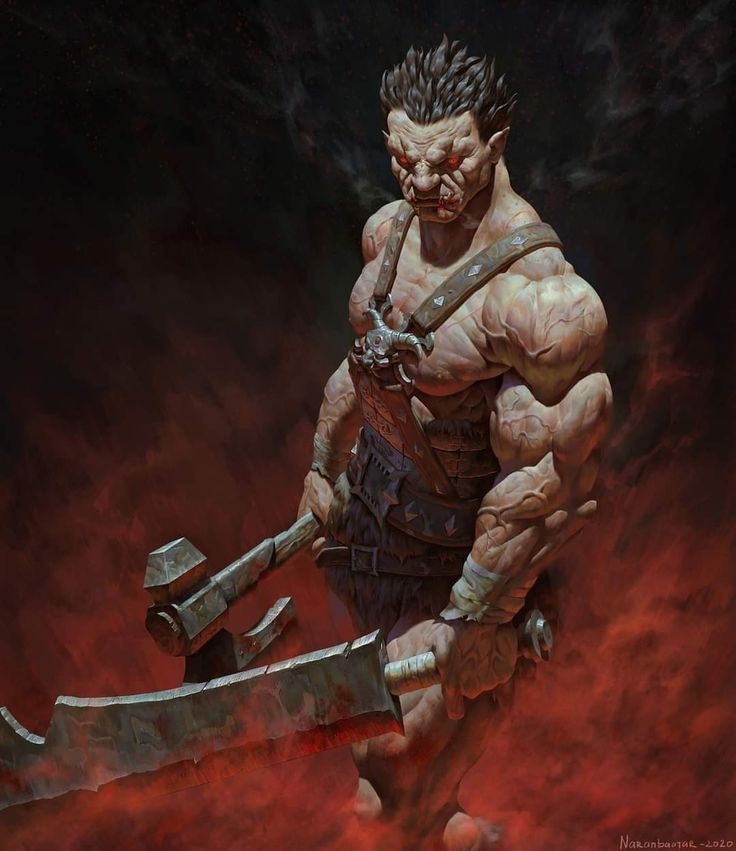

-
GUTS BASE

Guts é um guerreiro jovem e feroz, com uma força e resistência física notáveis, além de uma habilidade de combate aprimorada com sua Espada Dragão. Ele é capaz de infligir grandes danos aos seus inimigos com seus ataques brutais e precisos, e sua determinação e fúria em combate o tornam um oponente formidavel e indestrutivel.
ATK 2000 DFS 1800 -
GRIFFITH BASE
Griffith é um líder carismático e um guerreiro habilidoso, com uma inteligência tática e uma habilidade de combate aprimorada. Ele é capaz de inspirar e liderar seus aliados com facilidade, e sua habilidade de manipular os outros para alcançar seus objetivos o torna um oponente perigoso. Além disso, sua beleza e charme o tornam uma figura enigmática e fascinante.
ATK 1800 DFS 1200 -
CASCA
Casca é uma guerreira habilidosa e líder natural, com uma agilidade e velocidade notáveis, além de uma habilidade de combate aprimorada com sua espada. Ela é capaz de liderar e proteger seus aliados com eficácia, e sua inteligência tática e habilidade de adaptação em combate a tornam uma oponente difícil de derrotar.
ATK 1600 DFS 1000 -
BEHELIT
O Behelit é um artefato misterioso e poderoso, capaz de conceder desejos aos que o possuem, mas a um custo terrível. Ele é uma chave para o mundo dos Apóstolos e dos Deus-Hands, e seu poder é capaz de alterar o destino de quem o utiliza.
ATK 20000 DFS 20000 -
ZODD BASE
Zodd, o Nosferatu, é um guerreiro extremamente habilidoso e letal em seu modo humanizado, com habilidades de combate aprimoradas, força e velocidade acima da média, além de uma resistência e durabilidade notáveis. Ele é um oponente formidável, capaz de enfrentar e derrotar adversários poderosos com facilidade.
ATK 3800 DFS 4000